| アニメーション制作 制作進行 〜超入門書〜: アニメ制作を目指す為の最初の一冊 | |
| y_skywalker | |
| (2018) | |
はじめに
アニメーターは絵を描く人、でも「制作進行」ってどんなことをする人だろう？
そんな疑問を持つ方は多いのではないのでしょうか？
制作進行は、アニメーション制作において、必要不可欠な役職でありながら、非常に知名度が低い職業となっています。
とにかくアニメ制作に携わる仕事がしたい！
絵は描けないけど、アニメ制作に興味がある！
学校の先生に勧められたけど、どんな職業か分からない...。
そんな方へ少しでも制作進行について知って頂けるよう執筆しました。
この本が、制作進行という職業に少しでも興味を持つきっかけに。また、新たな目標達成の手助けになることを願います。
目次
Chapter 1 制作進行の仕事とは
Chapter 1-1 各クリエーターへの発注業務
Chapter 1-2 スケジュールの進行・管理業務
Chapter 1-3 素材の回収などの外回り業務
Chapter 1-4 スタッフのマネジメント業務
Chapter 2 制作進行の仕事の詳細
Chapter 2-1 準備期間
Chapter 2-2 制作期間〜序盤〜
Chapter 2-3 制作期間〜中盤〜
Chapter 2-4 制作期間〜終盤〜
Chapter 2-5 制作期間〜番外編〜
Chapter 3 制作進行のキャリアップについて
Chapter 4 制作進行の生活、金銭事情について
Chapter 5 制作進行の就職について
Chapter 6 制作進行という仕事の魅力
Chapter 7 業界用語解説
Chapter1 制作進行の仕事とは
制作進行とは、アニメーション制作におけるマネージャー職の一つです。
アニメ制作においては、担当話数の進捗管理やクリエーターのマネジメント、各工程の橋渡し役を担っています。
具体的な制作進行の業務は、大きく分けて以下の4つです。
1.各クリエーターへの発注業務
2.スケジュールの進行・管理業務
3.素材の回収などの外回り業務
4.クリエーターのマネジメント業務
アニメーション制作は、それぞれの担当分野で分業が行われており、30分のTVアニメでも50～100人程度のスタッフで制作をしています。
また、１つの会社だけで制作しているのでは無く、フリーランスのクリエーターや専門会社に発注することで、分業しながら制作を行うのが一般的です。
基本的なアニメーションの制作工程を次ページに記載します。
こうした各スタッフや会社への発注、スケジュールの管理、成果物の回収、マネジメントを請け負うのが制作進行です。
作品が完成するまでの全工程を幅広く担当する為、アニメーション制作においては必要不可欠な役職の一つとなっています。
Chapter1-1 各クリエーターへの発注業務
工程ごとの分野によって担当者が異なります。
その為、それぞれの分野を専門とするクリエーターへ発注をする必要があります。
発注しなければならない物量をみてみましょう。
30分のTVアニメでは、300カット・5000枚程度の作画枚数で構成されるのが平均と言われています。
「カット」とは、場面分けの最小単位で、作画枚数とはアニメーションの「動き」を意味します。
セクションによって、発注単位が異なりますので、それぞれ必要な発注数を確認しておきましょう。
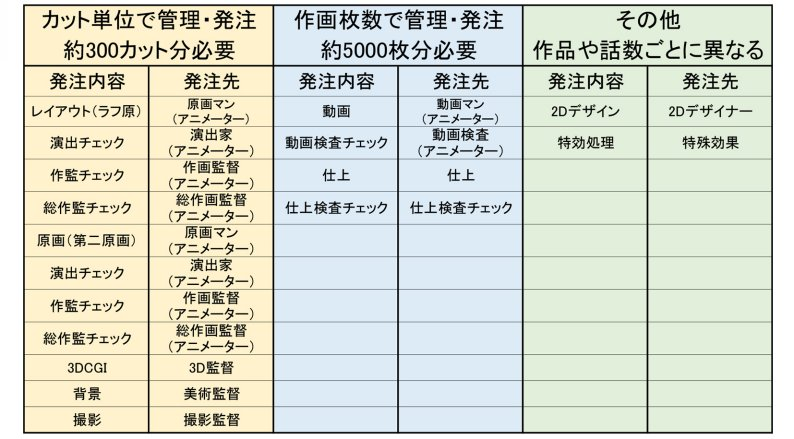
作画作業に携わる人を総称して「アニメーター」と呼びます。
制作進行の場合は、アニメーターへの発注が中心となります。
それ以外の発注先は、制作デスクやラインプロデューサーが担当しますが、その発注先に対して、具体的に「いつ・何を」発注するのかを段取りするのは制作進行が中心となって行います。
実際に発注業務を行うに際には、下記を中心に行います。
○営業・交渉
スケジュールや単価などの条件を話し合います。
制作進行の場合は、アニメーター（レイアウト・原画）が中心になります。
○打ち合わせを組んで、具体的な発注内容を刷り合わせる
作品の監督や演出、担当者で打ち合わせをします。制作進行から説明することは、ほとんどありませんが、打ち合わせ日程や場所の調整を行います。
○必要な設定・資料を用意する
キャラクター設定や美術設定、色見本設定などを必要に応じて準備します。場合によっては必要な資料を探すことや作成することもあります。
Chapter1-2 スケジュールの進行・管理業務
担当話数のスケジュールの進行・管理を行います。
全てのカットの進捗状況を把握し、スケジュールが遅れていないかどうかを綿密に管理します。
「進行表」と呼ばれる、Excelで作成されたもので進捗状況の管理を行うのが一般的です。
但し、工程によっては、昔ながらの紙媒体の進行表で管理する方が有効ですので、状況に応じて適切な方法を選択します。
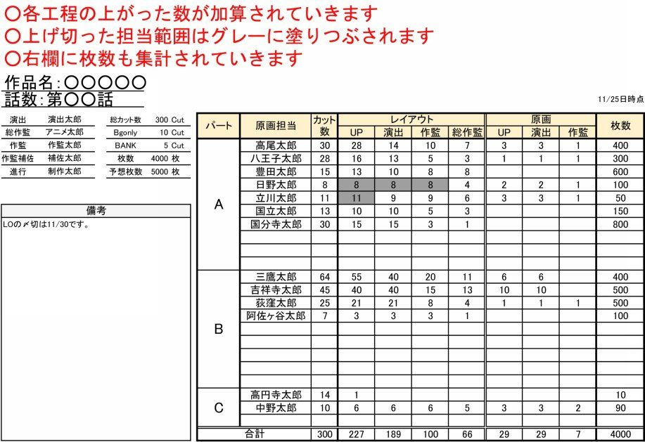
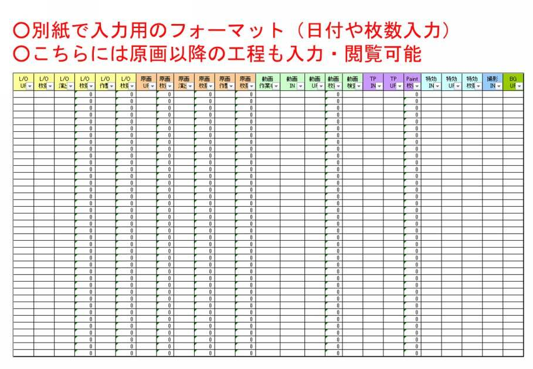
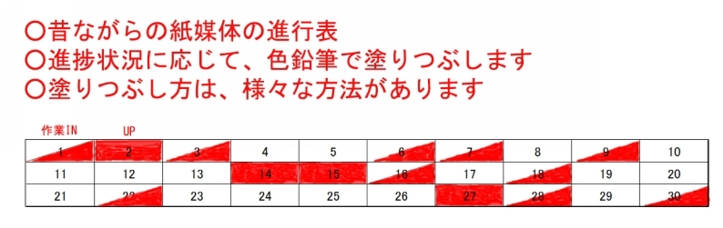
スケジュールを進行・管理する上では、状況把握だけではなく、各クリエーターと綿密なコミュニケーションを取りながら進めます。
効率的に各セクションの作業が進むよう、情報の共有や優先事項の説明、人員の調整などを執り行います。
Chapter1-3 素材の回収・移動などの外回り業務
出来上がった物の回収や資料・設定を配布します。
アニメ業界では、未だ紙媒体での作業が主流の為、出来上がった素材は実際に回収しなければなりません。
特に、フリーランスのクリエーターなどは労働時間が決められていない為、作業する時間も人によって異なります。よって、深夜や早朝に出来上がった素材を回収に行かなければならない場合もあります。
また、作業している場所や環境も人によって異なる為、複数の場所や遠方に外回りに行かなければならない場合もあります。
Chapter1-4 クリエーターのマネジメント業務
全ての工程を含めると大人数で作業する為、効率的に人を動かす必要があります。
いつ・どこで・どのように作業してもらうかを相談・指示をするのも制作進行の仕事です。
無駄を省き、作業効率を最大化する為にマネジメントしなければなりません。
当然ですが、スタッフよって正確も技量も様々です。
締め切りになっても作業が終わらない「こだわり派」の人、締め切りは必ず守ってくれるけど技量がイマイチな人、気難しい人、短気な人、など挙げればキリがありませんが、本当に色々な人がいる中で成果を出さなければならない為、高いコミュニケーション能力と折衝能力が求められます。
Chapter2 制作進行の仕事の詳細
制作進行の仕事を時系列に沿って、さらに詳しく解説していきます。
Chapter2-1 準備期間
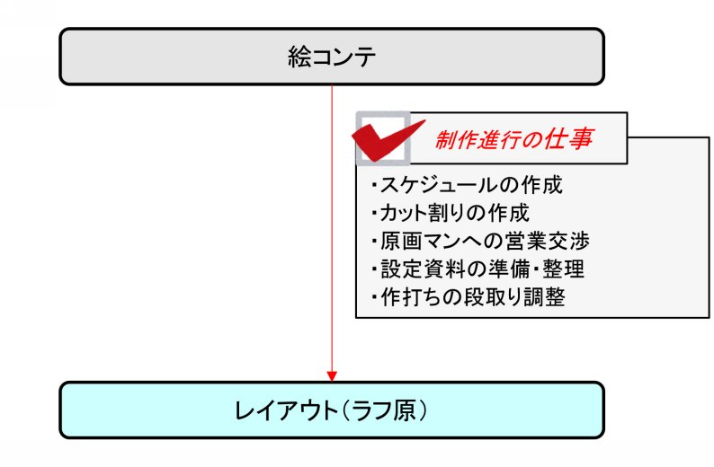
制作進行の業務は、監督から絵コンテが上がったところから始まります。
最初にすべきことはスタッフ編成の決定です。
約300カット程度のカットを原画マンに割り振らなければなりません。
○スケジュールの作成
まずは、スケジュールを決めます。
納期は制作デスク、もしくは、プロデューサーから落とし込まれるはずなので、それに合わせて各工程の〆切を設定していきます。
この時に、単純な〆切設定では無く、理論立ててスケジュールを構築できるようにしましょう。作成したスケジュールを基に、各スタッフと交渉し、担当話数を取り回さなければならいだけでなく、自分自身の行動計画書にもなります。
□納品へのスケジュールが破綻なく成立しているか
□各工程の作業日数が確保出来るよう想定されているか
□適切なタイミングで次工程へ発注することを想定できているか
作成したスケジュールは、その意図や理論を各スタッフへ説明できるかどうか確認しながら見直しましょう。
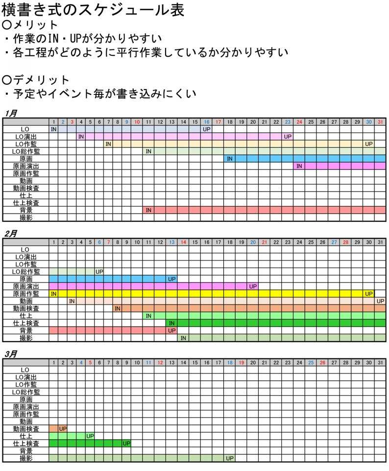
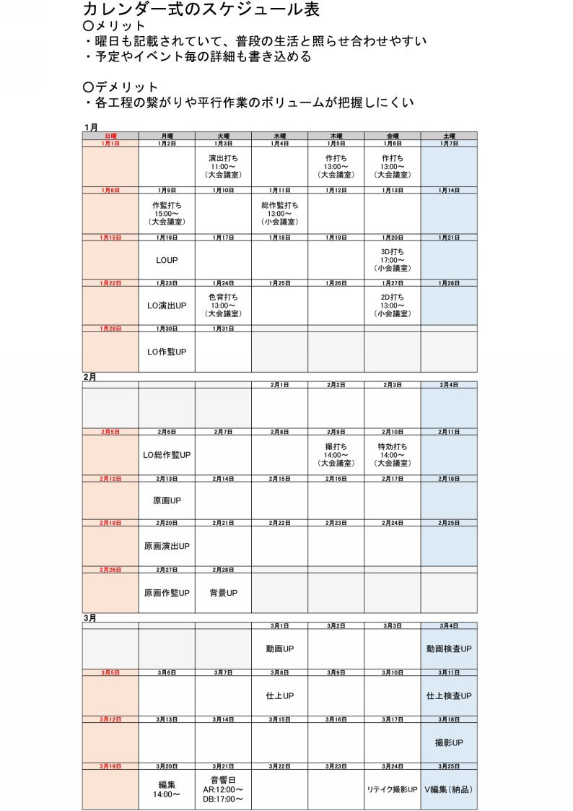
○必要な人数の決定
スケジュールを考慮した上で、必要な人数を決めていきます。
目安として、レイアウトや原画を１人が１日で上げられることができる数は2～3カット程度が平均です。
１週間で全てを回収しなければならないスケジュールであれば、15～20人程度、2週間で回収するのであれば、10～15人程度が必要です。
○カット割りの作成
人数とスケジュールが決まれば「カット割り」を作成します。
カット割りとは、担当者を決める為の範囲表です。担当範囲分けで不都合がでないようにまとまったシーンで範囲分けしていきます。
この際に必要人数と同程度の範囲分けが出来れば、効率良く担当決めができます。
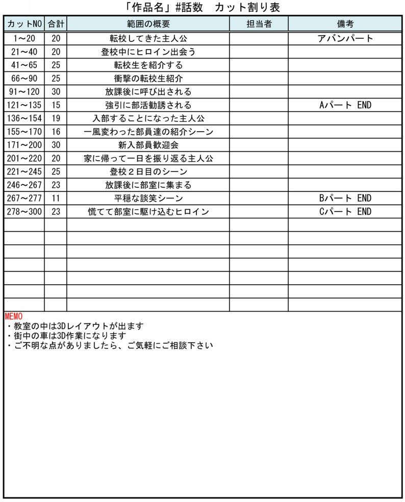
○営業・交渉
スケジュール・カット割りを作成したら、実際に担当者を決めます。
フリーランスや会社に所属している原画マンへ営業していきます。
会社によっては班（チーム）で分けられている場合がありますので、その場合は、制作デスクと相談しながら担当を決めていきます。
□作品名
□話数
□スケジュール
□単価
□絵コンテ
□カット割り
必要な提示条件はこのくらいですが、作品の魅力を合わせて伝えることが出来れば、営業が成功しやすいかもしれません。
○原画マンへの発注（打ち合わせ）
担当者が決まれば、打ち合わせを行います。
演出からアニメーターへ作品の説明や絵コンテの意図、カット毎の指示を細かく打ち合わせしていきます。
このときの打ち合わせを「作打ち（さくうち）」と呼びます。
制作進行は、作打ちの日時や場所を決めたりするなどの段取りを行います。
また、作打ち日までに必要な設定・資料を揃えておくことも制作進行の仕事です。
打ち合わせ中は、設定出しと呼ばれる作業をします。
基本的には打ち合わせの内容に沿って、設定・資料を提示する演出の補助的な業務です。
Chapter2-2 制作期間～序盤～
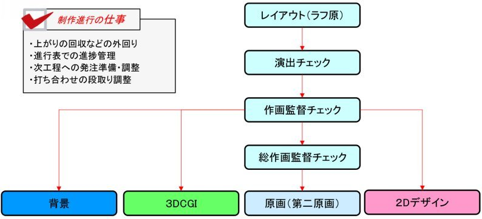
一通り作打ちが終わり、アニメーターが作業を開始したら、進捗管理が中心の業務になります。
○進捗を管理する
前述の進行表を使用して、進捗を管理します。
□予定通り上がってきているか
□次の工程も予定通り作業に入ることが出来るか
などに注意を払いながら進めます。
○外回りで上がりを回収する
フリーランスや専門会社へ発注している場合は、出来上がったものを回収しなければならなりません。
それを次の担当者へ渡す場合も同様に外回りで素材を動かす必要がある為、この辺りから勤務時間が不規則になることが多いです。
○次工程の発注準備をする
同時平行して次の工程への発注や準備を行います。
背景などはスキャンデータを送って発注する為、紙素材をデータ化する作業が発生します。
また、発注用の資料も準備し始めなければなりません。
設定・資料だけでなく、「香盤表」と呼ばれる表を作成しましょう。
香盤表とは、各シーンのキャラクターの服装や小物、時間帯、場所などを一覧にして分かり易くまとめた表です。この資料があると、打ち合わせや発注を効率的に進めることが出来ます。
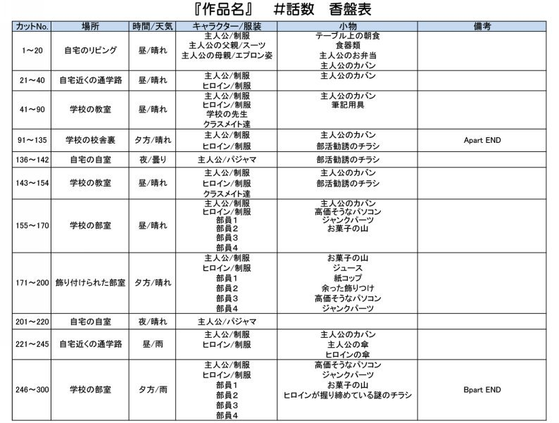
この時期にやるべき打ち合わせは、下記になります。
□作監打ち：作画監督と話数の詳細な内容を刷り合わせます。
□総作監打ち：総作画監督と話数の詳細な内容を刷り合わせます
□色背打ち：背景・仕上担当者と背景やキャラクターの色味を打ち合わせます
□3D打ち:3D担当者と話数の詳細な内容を刷り合わせます。
□2Dデザイン打ち：2D担当者と話数の詳細な内容を刷り合わせます。
Chapter2-3 制作期間～中盤～
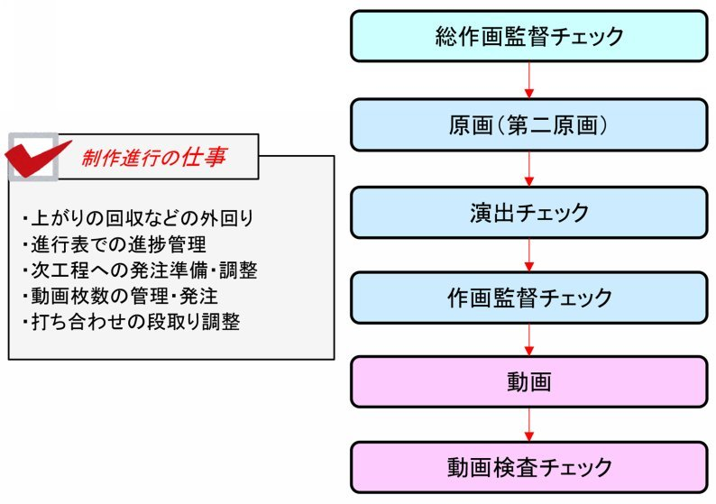
原画（第二原画）作業中心になります。
再度、アニメーターとスケジュールの調整や素材の移動を行います。
○進捗を管理する
原画の場合でも常に進捗管理を行い、スケジュールに遅延が出ていないか確認しながら進めます。
引き続き、進行表を使用して管理します。
○動画の発注する
次工程は動画になる為、動画の発注も検討しなければなりません。
動画の場合は、作画枚数ベースでどう捌くかを考えながら進めます。
スケジュールに余裕があれば、国内のアニメーターへ発注しますが、１日で作業できる枚数が10～30枚程度と少ない為、専門会社へまとめて発注することが多いです。
○次工程の発注準備をする
引き続き、打ち合わせがあるので、発注の準備を平行して進めます。
この時期にやるべき打ち合わせは下記になります。
□特効打ち：特殊効果担当者と話数の詳細な内容を刷り合わせます。
□撮打ち：撮影監督と話数の詳細な内容を刷り合わせます。
Chapter2-4 制作期間～終盤～
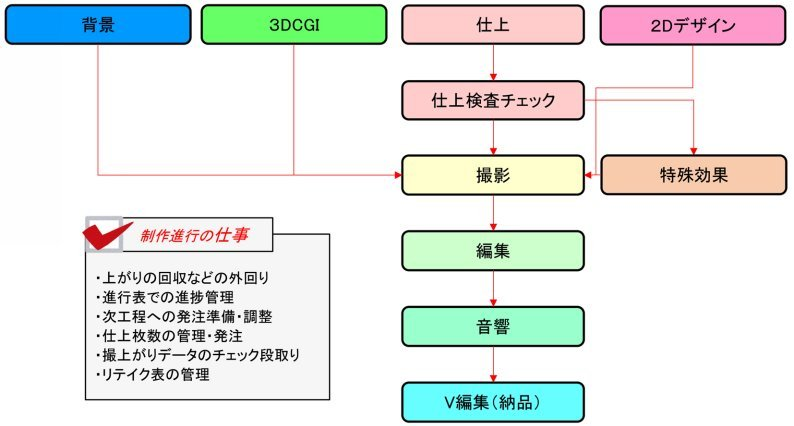
仕上・撮影作業が中心になります。
仕上は着色作業、撮影は各素材をまとめて映像にする作業です。
○進捗を管理する
ここまでくると納期が大分迫ってきているので、より進捗に注意しながら最終的な調整をします。今まで通り、進行表で管理しましょう。
○仕上を発注する
仕上は動画と同様に枚数で管理する為、注意が必要です。
フリーランスでは無く、専門会社へまとめて発注することが多いです。
○撮影を発注する
撮影は全ての素材が揃わないと撮影できない為、各セクションの進捗により注意が必要です。カット毎に今まで発注したものが揃っているかを事前に確認しましょう。
○撮影後の映像を確認する
撮影が終了したら、映像として問題ないかどうかチェックします。
各工程の責任者が集まってチェックをする必要があるので、日程や場所の段取りを制作進行が手配します。
修正が発生する場合は「リテイク」として呼ばれる修正作業を行います。
リテイクも進行表と同様にExcelに入力して管理しましょう。
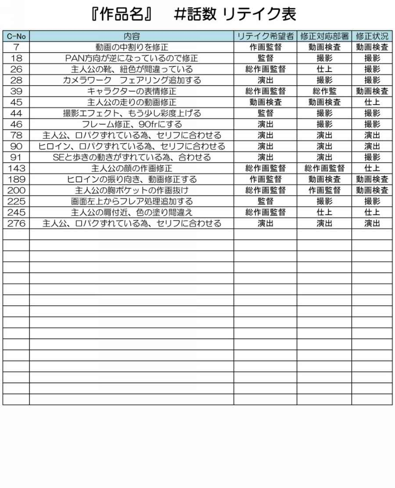
リテイクが出た場合は、修正しなければならないセクションから作業をやり直す必要があります。その為、何を修正しなければならないのか、適切に把握する必要がある為、チェックの際は漏れが無いように必ずメモを取りましょう。
○撮影データを編集する
撮影が完了したカットから編集スタジオに持ち込みます。
全てのカットが揃ったところで編集作業を行い、テレビのフォーマットに揃えていきます。ここで初めて１本に繋がった映像になります。
○音響作業をする
１本に繋がった映像を元にアフレコやダビング（音付け作業）を行います。
ここまでくると制作進行が行うことはありません。
（問題が発生しないよう見守るぐらいです...）
○V編集を行う
アフレコやダビング後の音データと編集データをV編スタジオに持ち込みます。この時に問題が無ければ納品完了です。
Chapter2-5 制作期間～番外編～
今回説明した内容は比較的順調なスケジュールですが、実際の現場では、様々な原因で遅延することが多く、状況に応じた対応が必要となります。
実際に遅延した場合のスケジュールを次ページにて記載します。
今回、紹介するケースは、絵コンテスケジュールが遅延し、制作期間が圧縮されているケースです。
基本的なフローは同じですが、編集や音響を前倒しに行います。
声優や音響現場の都合上、編集や音響日程は変更することが難しい為、このようなスケジュールが多々発生します。
この場合、編集用にダミー撮影を発注する必要あります。
ダミー用撮影とは、現状ある素材で撮影を行うことです。進捗状況にもよりますが、絵コンテ段階やレイアウト（ラフ原）段階での撮影などがあります。
ダミー用撮影は、全ての素材をデータ化しなければならない為、制作進行の負担が高くなります。
また、当然ながら一日でも早くカットを回収・次工程へ運ばなければならず、徹夜で作業することが多くなります。さらに、各クリエーターへ徹夜で作業してもらうなど、無理なお願いをしなければならないことが多くなります。
不満を言われことも多くなり、体力・精神的に疲弊してしまう人が多いです。
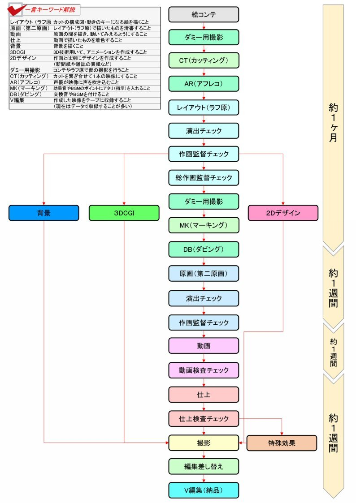
Chapter3制作進行のキャリアアップについて
○キャリアアップについて
制作進行→制作デスク→ラインプロデユーサーとキャリアップしていくのが一般的です。
制作デスクは、制作進行を統括することや各話メインスタッフの編成を担当します。
また、ラインプロデューサーは作品全体のスケジュール管理やメインスタッフの編成を主に担当します。
○ラインプロデューサーとは
よく混同している方がいますが、ラインプロデューサーは企画立案などには携わりません。制作現場の運営のみに携わることになりますが、脚本や監督、キャラクターデザインなどの人選はラインプロデューサーの営業力、決定権が大きいので、作品に対する影響力は非常に大きい立場と言えるでしょう。
○昇格までの期間について
早ければ2〜3年程で制作デスク、さらに2〜3年でラインプロデューサーへ昇格する人もいますが、平均すると最低10年程度の実務経験が必要になることが多いようです。
○演出・監督方面へのキャリアアップ
制作進行から全てのセクションに携われることができる為、その経験を生かして演出・監督のキャリアへ進む人もいます。
制作進行出身では、下記のような有名監督がたくさんいらっしゃいます。
□水島努（侵略!イカ娘、ガールズ&パンツァー、SHIROBAKO）
□元永慶太郎（School Days、刀語、デジモンアドベンチャー tri）
□富野由悠季（伝説巨神イデオン、機動戦士ガンダムシリーズ）
□水島精二（鋼の錬金術師、機動戦士ガンダム00）
Chapter4 制作進行の生活、金銭事情について
○生活面について
各工程間の橋渡し役を担っている特性上、不規則な生活になりやすいです。
特に、スケジュールが逼迫している状況では、上がりをすぐに次工程へ運ばなければならないことが多く、待ち時間も含めると長時間労働になりやすい傾向にあります。
また、クリエーターが規則正しい生活リズムであることはほとんど無く、大体の人は昼から夕方にかけて仕事を始める人が多いです。
当然、上がりの回収が朝方になったりすることが頻繁にあり、日常的に生活リズムが不規則になりやすいです。
○休日について
休日を返上して仕事をすることが多く、作品が動いているうちはまとまった休みが取りづらい。その反面、作品が終わった直後はまとまった休みが取れることが多い傾向にあります。
休日出勤手当てなどは、無い会社が多いです。
○給料について
平均的には、初任給17万程度の会社が多いです。
正社員としての雇用は少なく、契約社員や個人事業主としての契約が多い。
ボーナスは、「金一封」程度の会社が多いようですが、他業種と同じように1～2ヶ月分支給する会社も存在します。
昇進により給料は上がっていきますが、ラインプロデューサーでも年収400万〜500万程度と言われており、金銭面では夢の無い仕事です。
○結婚や恋人について（個人差があります）
全体的に独身者が多いように感じます。
休日が少ないことや仕事一筋な人間が多い為、独身者が多いと思われます。
○通勤や住居について
終電を超えて仕事をすることが多いので、会社近辺に家を借りている人が圧倒的に多いです（遠くても自転車通勤圏内）
Chapter5 制作進行の就職について
○各社の募集について
クリエーターに比べると地味な仕事ですが、アニメ制作においては必要不可欠な仕事の為、どの会社も優秀な人材を欲しています。
新卒採用を毎年行なっているところが多いですが、退職者も多い為、年に複数回募集することが多いようです。故に、就職するチャンスは多い職種だと思われます。
○必要な資格
車での外回りがある為、運転免許証必須。
○求められる能力
アニメ制作に関する専門知識よりは、社会人としての教養を磨いた（アピール）方が良いです。
・コミュニケーション能力
・管理能力
・立案能力
・逆境に耐えるタフさ
面接では、アニメが好きかどうかよりも、過酷な環境に耐えていけそうかどうかや一般的な教養が備わっているかどうかを見ることが多いようです。
本書で記述したように、クリエーター的素養より、社会人としての素養を求められる職業です。
Chapter6 制作進行という仕事の魅力
○どのクリエーターへ発注するかで、作品の良し悪しが決まる！
作品の良し悪しは、クリエーターの技量やセンスに依存します。
しかし、そのクリエーターへ発注するのは制作進行です。
どのクリエーターへ発注するかどうかで、映像の仕上がりが大きく変わる為、作品に対する影響力は、非常に高い仕事だと思います。
自分が編成したスタッフで、とても良い結果が出せた時の達成感や満足感は他の仕事では得がたいものがあります。
○スケジュールを適切に管理・進行出来れば、良い作品になる！
必要な作業日数が確保出来なければ、クリエーターが最大限の力を発揮できません。
最近、スケジュールの破綻によって、上がりの悪い外注先に丸投げしている作品を多く見かけるようになりました。そして、適切な作業時間が確保された作品と比較すると、とても低いクオリティーとなっています。
どんなに素晴らしいクリエーターへ発注しても、１日しか作業日数が確保できなければ、手抜きの上がりにしかなりません。
そのクリエーターが最大限に力を発揮する為の時間を確保するのは、制作進行の力量次第の為、非常に責任ある仕事だと思います。
○クリエーターのマネジメントは、とてもやりがいがある！
作品は各クリエーターの総合力で出来上がります。
クリエーターが作業しやすい環境や時間、動機付けなどをマネジメントすることが出来れば、効率的に力を発揮することが出来ます。
制作進行が「良い仕事」をすることが出来れば、クリエーターも「良い仕事」をする事が出来ます。大人数をマネジメントする苦労はありますが、その分、やりがいのある仕事だと思います。
Chapter7 用語解説
○あがり
作業が終わった素材のこと。クリエーターの成果物。
○アフレコ
声優が映像に声を吹き込むこと。監督や音響監督、演出が声優に指示を出しながら収録を進める。専門の録音スタジオで行うのが一般的。
○色指定検査
色彩設計が作成した色指定表に合わせて、カット毎に指示を入れる人。
塗り上がってきたカットをチェックする。
○色背打ち
キャラクターや小物の色味、背景について説明する打ち合わせ。
色彩設計や美術監督、演出、監督、制作が出席する。
○絵コンテ
シナリオを元に起こされた、映像構成の設計図。
カットの画面構成やキャラクターの演技、カメラワークなどの詳細が記されている。
○演出
話数の映像構成や演出の責任者。
作品によってはディレクターとも呼ばれる。
○演出打ち
監督が演出に作品概要や演出方針を説明する打ち合わせ。
出来上がった絵コンテを元に行われる最初の打ち合わせ。
○音響監督
映像の音響に対しての責任者。
アフレコや効果音、BGMを中心に監督する人。
○CT（カッティング）
カットを繋ぎ合せて１つの映像に編集すること。
細かなカット間の調整を行う。
○カット割り
原画マンの担当範囲を記した表。
シーン毎に細かく区切られており、原画マンごとに担当を割り当てる。
○監督
シリーズ作品全体を演出する人。
映像の内容についての最高責任者。
○脚本
シナリオとも呼ばれ、作品の内容を文字で起こしたもの。
○キャラクター
作品に登場する人物。
○原画（第二原画）
レイアウト（ラフ原）で描いたものを清書したもの。
○原図
レイアウトのこと。
背景の情報や指示、キャラクターの配置などを表したカットの構成図。
○作打ち
演出と原画マンが行う打ち合わせ。
担当のカットに対して細かな指示や内容を擦り合わせる。
○撮影
カット毎の仕上素材・背景を組み合わせて映像にする作業。
タイムシートの指示に従い、カメラワークや撮影効果などのエフェクト処理を追加していく。
現在では、全てデジタル作業で行っており、adobe社のAftereffectというソフトが主流。
○撮打ち
話数の撮影処理について、カット毎に打ち合わせをする。
撮影監督や演出、監督、制作が同席する。
○作画監督
略して「作監」と呼ばれる。
担当話数の作画に対しての責任者。原画マンが描いた絵をチェックして修正する。
○作監打ち
作画監督と演出が話数の内容について、打ち合わせすること。
キャラクターの影付けや表情、カット毎の演出意図を説明していく。
○仕上
動画素材を着色する作業。
ペイントソフトを使って、色指定表通りに色を塗っていく。
○色彩設計
キャラクターや小物などの色を設計する人。
基本色だけでなく、シーン色なども設計する。
○進行表
制作進行が進捗状況を管理する為の表。
昔は紙に書き込んでいたが、現在はExcelで表を作成している。
これがないと、制作進行は仕事ができない。
○スケジュール
各工程の締め切りやイベントごとの日程を記したもの。
○声優
アフレコでキャラクターに声を吹き込む人。「キャスト」とも呼ばれる。
○線撮
ダミー用撮影のこと。
スケジュールの都合で音響作業や編集を先行して行う際に、揃っている素材で撮影をすること。
絵コンテから撮影する「コンテ撮」やレイアウトで撮影する「レイアウト撮」などがあるが、映像としての情報量が極端に少ない為、音響作業が大変になる。
○総作画監督
作品全体の作画に責任を持つ人。
キャラクターデザインと兼用することが多い。
作画監督の修正の上から、さらに修正を入れる。
○総作画監督打ち
総作画監督と演出が話数の内容について、打ち合わせをすること。
作監打ちと同様に、演出意図を擦り合わせる。
○タイムシート
セルワークやカメラワークなどの指示を書き込む用紙。
1秒が24コマで細分化されていて、それに指示を入れていく。
作画だけでなく、仕上や撮影に対しての指示もこのシートに書く。
○ダビング
専門の音響スタジオで効果音やBGMをつける作業。
○単価
クリエーターの報酬金額。
動画１枚：200円〜250円、レイアウト（原画込み）１カット：4000円～7000円、くらいが相場であり、一般的に見ると低い報酬となっている。
○動画
原画を清書し、タイムシートの指示に沿って、原画の間の動きを割っていく作業。
この作業をすることで、実際に絵が動いて見えるようになる。
○動画検査
出来上がった動画をチェックする人。
指示通り作画されているか、素材に不備がないかチェックする。
○特殊効果
着色後のデータを加工し、立体感や質感を追加する作業。
食事や武器などに処理を入れることが多い。
○中割り
動画の作業の一つ。
原画と原画の間の中間を描くこと。
○背景
映像における背景のこと。BGとも呼ばれる。
風景だけでなく、キャラクターの心情やスピード感などを表現する為、アニメ映像においては非常に重要な素材の一つ。
原画マンが描いたレイアウトをスキャナーでデータ化し、それを背景担当者がデジタル上で作業する。
○美術監督
背景作業における責任者。作品の背景に対して責任を持つ人。
○リテイク
カットや素材を修正すること。
全ての工程で発生する可能性があるが、撮影後のデータを見て、まとめて出すことが多い。
○リテイク表
リテイクを管理する為の管理表。
リテイク内容や修正担当者、進捗状況などが記載されている。
○Aパート・Bパート
映像の区分けのこと。
一般的にAパートが前半、Bパートが後半になっている。
劇場などの尺が長い作品では、これ以外にもCDE...と細かく分けられている。
○2Dデザイン
アニメに登場する本や新聞、服の柄などを作成する。
作画では描きにくいデザインをデジタル上で作成し、撮影で合成する。
○3DCGI
3D技術を用いて、アニメーションを作成すること。
例えば、自動車や人の群衆などを作業することが多い。
作画では負担の高い作業をサポートする立ち回りが多いが、技術の進歩により、3Dだけで制作されたアニメも登場している。
○V編集
映像の最終確認をし、最終的な納品形式にする作業。
EDテロップなどは、このタイミングで入れる。